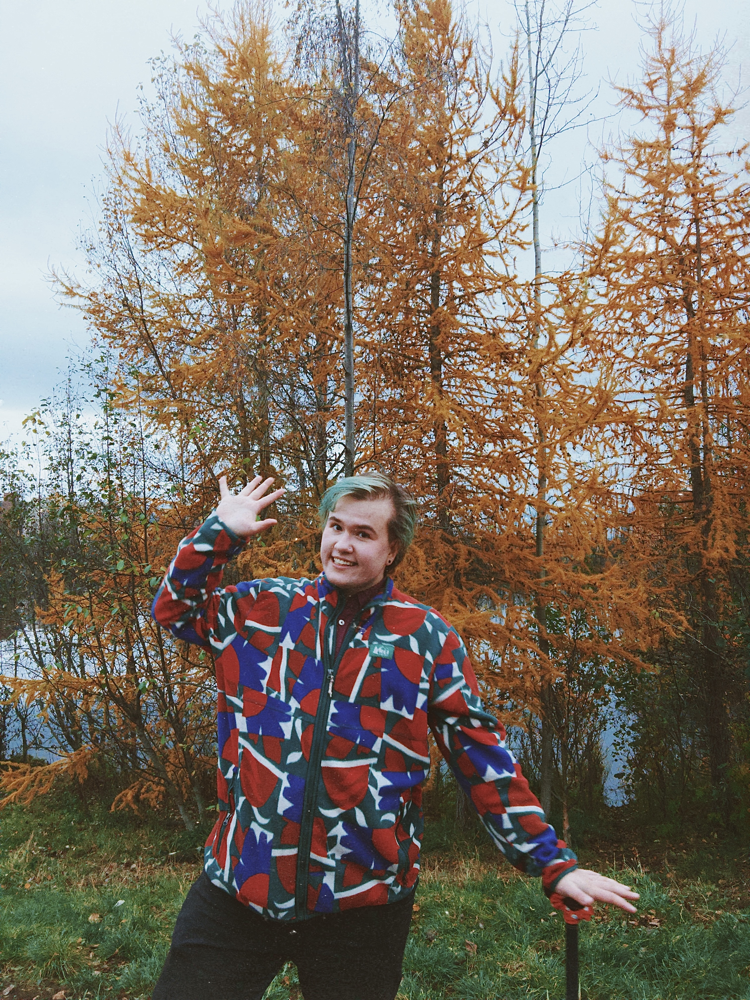

About and Lore
Hi, friends!
Fun name facts: my name is a family name! I am the fourth Alexei in my known lineage. My name is Russian and originates from Ancient Greek Ἀλέξιος, meaning “helper; defender.” My last name Batishchev comes from the word батя [ˈbatʲə] which is a familiar address for “dad” or “elder.”

Some tongue-in-cheek folk etymology of my many names: Лёха [ˈlʲɵxə] from the word лихач [lʲɪˈxat͡ɕ] meaning “daredevil”; Лука [ɫʊˈka] from the word “лукавый” [ɫʊˈkavɨj] meaning “sly” and “playful.”
I grew up in Moscow, Russia in a middle class "sleeping district." At sweet 16, I moved to Japan and finished my secondary schooling in an American School. Since then, I have lived in Virginia, Texas, and finally Alaska.

When I am not researching, teaching, or writing, I spend my time spending time with my friends and my cats, reading, running, or learning yet another language. I am also a poet and a visual artist. You can find more information about this down below.

Artist Statement
I am a Moscow-born multidisciplinary artist, poet, and sociolinguist currently based on the unceded Dena'ina lands in Anchorage, Alaska. An autodidact by nature, I am self-taught – but is anyone really fully self-taught? – in a variety of mediums including, but not limited to printmaking, photography, zines, painting, drawing, performance, and, of course, mixed media.
With my art, I like to explore themes of identity and becoming, intersection of the metaphysical with the material, nostalgia and belonging. Lately, all my commission projects were digital art pieces; I am proficient in both raster- and vector-based art, mostly using Procreate and Adobe Illustrator. I also enjoy working with analog mediums, especially when it comes to manipulation of the 2D space via collage, 3D elements, and using unconventional art products, such as office supplies.
My art and my research are driven by one and the same: who are we – humans? What are the deepest desires of our hearts? How do we tell the world about who we are?
Feel free to check out my visual works here and my poetry on Substack!
Select Projects & Artistic Collaborations
- I’ve had great pleasure designing, illustrating, and assisting in translation of the Russian Jack Springs Park Signs. This project features 24 of the many languages in Anchorage, Alaska as well as practical education about the history of the park, the outdoors, and family-friendly activities.
- I have created the single cover for Ruth & Kengo’s song Kaleidoscope Being.
- I have created the poster for the second annual Anchorage Critical Mass organized by Bike Anchorage.
I am always open to inquiries about artistic collaboration! I usually take on larger projects, such as the aforementioned – event flyers, covers, logos and branding, and community-based projects.

Bike Anchorage Poster

Single Cover Art for Ruth & Kengo
I publish selected poetry on my Substack. I have been writing poetry since a very young age. In my 20s, I dedicated a substantial amount of time to building up my local poetry community by submitting to local publications, participating in writing groups, and hosting a local poetry slam (2023-2026). My poetry appears in Year Round Queer, Butch-Femme Press, and Alaska Women Speak. My poem ice migration was nominated for the Pushcart Prize 2023.